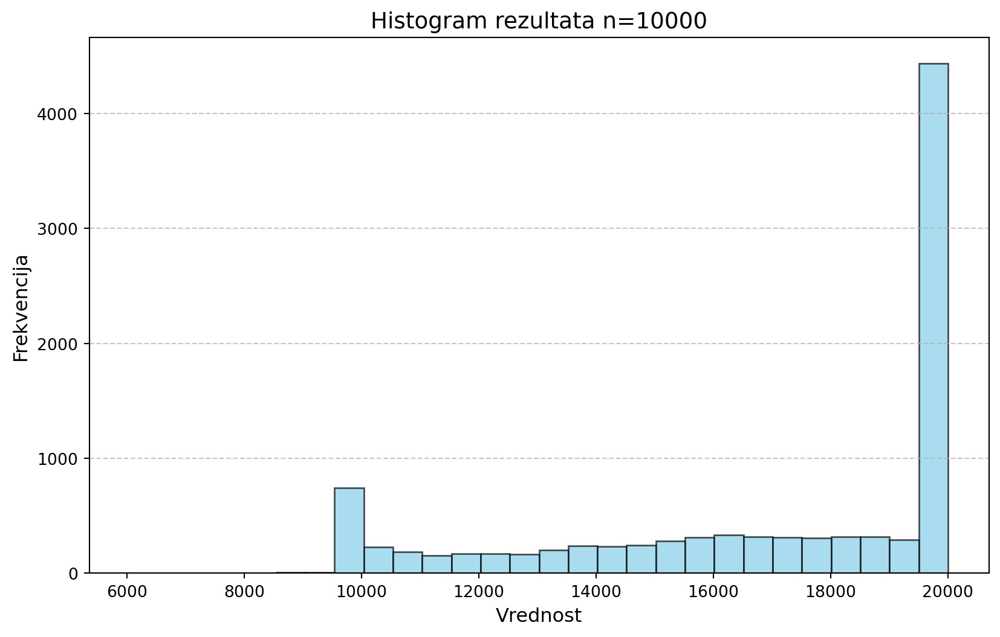
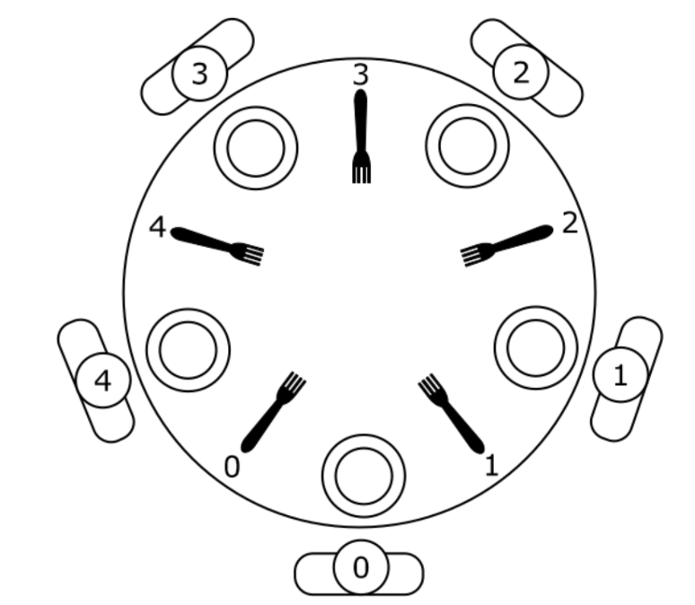
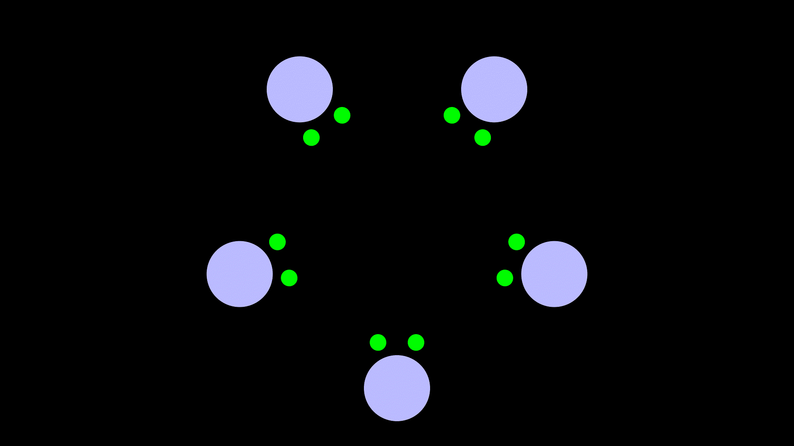
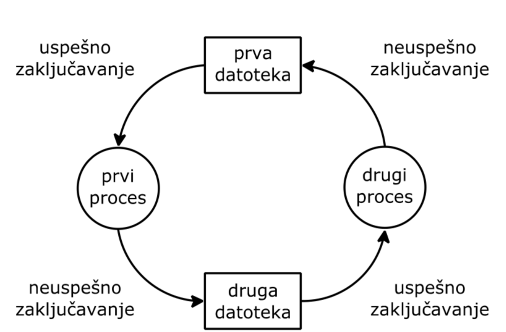
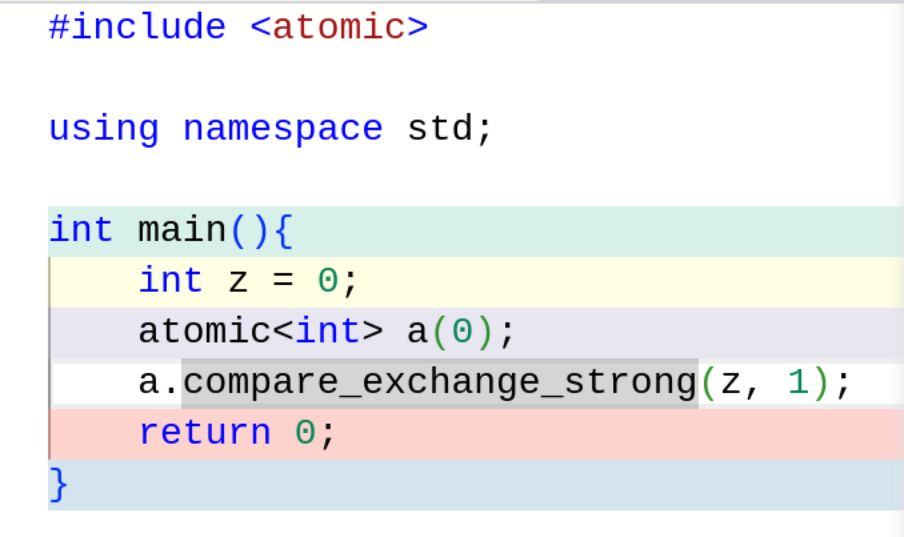
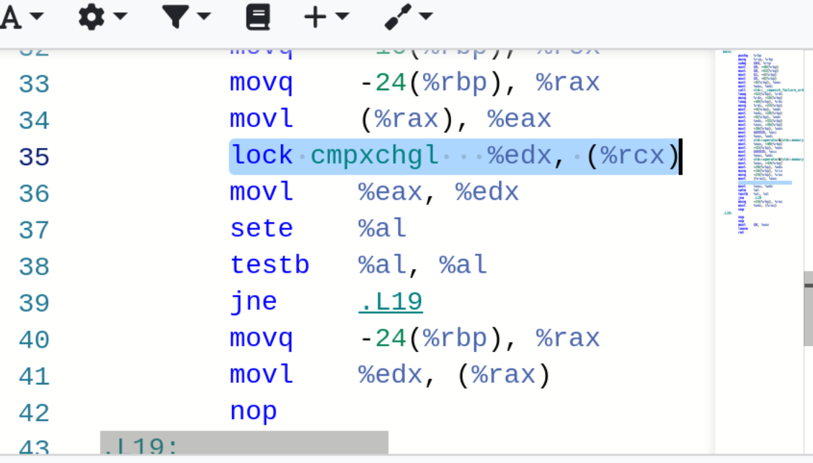
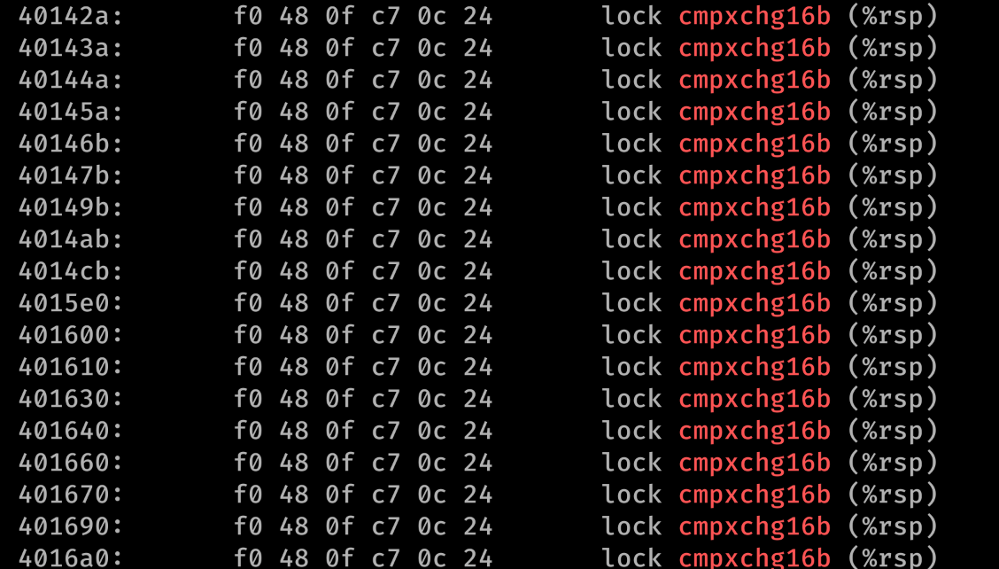

2025-03-01
f koju smo već napravili i zovemo t.t i niti main.main sačeka da se nit završi, što se zove udruživanje sa niti (eng. join), što smo mi ovde i uradili.t, i ne čeka ništa. Ovo se zove odvajanje od niti (eng. detach).main završi dok se nit ne terminira.join u svom destruktoru (RAII obrazac), i ima druge osobine koje pominjemo kasnije.std::jthread#include <cassert>
class Counter {
private:
int i;
public:
Counter(int initial_i = 0) : i(initial_i) {}
int get() const { return i; }
void inc() { i++; }
void dec() { i--; }
};
void f(Counter &c) {
for (int i = 0; i < 10000; i++) {
c.inc();
}
}
// start snippet main
int main() {
Counter c;
f(c);
f(c);
assert(c.get() == 20000);
return 0;
}
// end snippet main
Choosing i Numberbool choosing[NUM_THREADS] = {false};
int number[NUM_THREADS] = {0};
void lock(int i){
choosing[i] = true;
number[i] = 1 + max(number);
choosing[i] = false;
for(int j = 0; j < NUM_THREADS; j++){
while(choosing[j]);//busy-wait
while
(
(number[j] != 0) &&
(
(number[j] < number[i]) ||
(number[j] == number[i] && j < i)
)
);//busy-wait
}
}sti i cli na x86_64 arhitekturi), onda garantujemo da nas niko drugi neće prekinutiCMPXCHNG i (uz prefiks LOCK) omogućava da se vrlo jednostavno napravi struktura koja bezbedno upravlja memorijom propusnice“The CMPXCHG (compare and exchange) and CMPXCHG8B (compare and exchange 8 bytes) instructions are used to synchronize operations in systems that use multiple processors. The CMPXCHG instruction requires three operands: a source operand in a register, another source operand in the EAX register, and a destination operand.”
“If the values contained in the destination operand and the EAX register are equal, the destination operand is replaced with the value of the other source operand (the value not in the EAX register). Otherwise, the original value of the destination operand is loaded in the EAX register.”
“The status flags in the EFLAGS register reflect the result that would have been obtained by subtracting the destination operand from the value in the EAX register. The CMPXCHG instruction is commonly used for testing and modifying semaphores. It checks to see if a semaphore is free. If the semaphore is free, it is marked allocated; otherwise it gets the ID of the current owner.”
“This is all done in one uninterruptible operation. In a single-processor system, the CMPXCHG instruction eliminates the need to switch to protection level 0 (to disable interrupts) before executing multiple instructions to test and modify a semaphore. For SMP systems, CMPXCHG can be combined with the LOCK prefix to perform the compare and exchange operation atomically.”
std::mutex koju možemo da zaključamo i otključamolock nas blokira i mi čekamo dok nas oslobađanje muteksa ne pomeri odatle.lockstd::unique_lock koji se može premeštati i std::scoped_lock ubačen u C++ 2014, koji ne može da se premešta (što znači da nije pogodan kod uslovnih promenljivih, o kojima više uskoro), ali zato može da zauzima više muteksa odjednom.mutex je mehanizam koji omogućava da kontrolišemo koliko niti mogu biti u nekoj ključnoj sekciji kodacondition_variable.wait nad condition_variable instancom..wait prima lock pod kojim smo trenutno i oslobađa ga dok čekamo da ne bi blokirali ceo program tako što čekamo pod bravom. Pošto ovim premeštamo lock, ovo mora biti unique_lock..notify ili .notify_all gde prva otkoči nit koja najduže čeka na uslov, a druga otkoči sve.Message_boxtemplate<class MESSAGE> void Message_box<MESSAGE>::send(const MESSAGE* message){
unique_lock<mutex> lock(mx);
while(state == FULL)
empty.wait(lock);
content = *message;
state = FULL;
full.notify_one();
}
template<class MESSAGE> MESSAGE Message_box<MESSAGE>::receive(){
unique_lock<mutex> lock(mx);
while(state == EMPTY)
full.wait(lock);
state = EMPTY;
empty.notify_one();
return content;
}send() i receive() omogućuju asinhronu razmenu poruka jer se pošiljalac i primalac ne sreću prilikom razmene poruka (aktivnost pošiljaoca se zaustavlja pri slanju poruka samo kada je komunikacioni kanal pun, dok se aktivnost primaoca zaustavlja pri prijemu poruka samo kada je ovaj kanal prazan).

ostream koji je sinhronizovan, ali ovako možemo da se igramo sa formatiranjem stringova.std::thread::get_id
int main() {
std::array<std::mutex, 5> forks;
Logger l;
Counter c;
std::jthread t1(philosopher, std::ref(l), std::ref(c), std::ref(forks));
std::jthread t2(philosopher, std::ref(l), std::ref(c), std::ref(forks));
std::jthread t3(philosopher, std::ref(l), std::ref(c), std::ref(forks));
std::jthread t4(philosopher, std::ref(l), std::ref(c), std::ref(forks));
std::jthread t5(philosopher, std::ref(l), std::ref(c), std::ref(forks));
return 0;
}
void philosopher(Logger &l, Counter &c, std::array<std::mutex, 5> &forks) {
int id = c.get();
std::this_thread::sleep_for(STEP);
while (true) {
l.println(std::format("Filozof {} misli o Formi Dobrog.", id));
std::this_thread::sleep_for(THINK);
l.println(std::format("Filozof {} je ogladneo.", id));
l.println(
std::format("Filozof {} pokusava da uzme levu viljusku ({}).", id, id));
forks[id].lock();
std::this_thread::sleep_for(STEP);
l.println(std::format("Filozof {} pokusava da uzme desnu viljusku ({}).",
id, (id + 1) % 5));
forks[(id + 1) % 5].lock();
l.println(std::format("Filozof {} jede", id));
std::this_thread::sleep_for(EAT);
l.println(std::format("Filozof {} spusta levu viljusku ({})", id, id));
forks[id].unlock();
std::this_thread::sleep_for(STEP);
l.println(
std::format("Filozof {} spusta desnu viljusku ({})", id, (id + 1) % 5));
std::this_thread::sleep_for(STEP);
forks[(id + 1) % 5].unlock();
}
}
void philosopher(Logger &l, Counter &c, std::array<std::mutex, 5> &forks) {
int id = c.get();
std::this_thread::sleep_for(STEP);
while (true) {
l.println(std::format("Filozof {} misli o Formi Dobrog.", id));
std::this_thread::sleep_for(THINK);
forks[id].lock();
std::this_thread::sleep_for(STEP);
forks[(id + 1) % 5].lock();
std::this_thread::sleep_for(EAT);
forks[id].unlock();
std::this_thread::sleep_for(STEP);
std::this_thread::sleep_for(STEP);
forks[(id + 1) % 5].unlock();
}
}
void philosopher(Logger &l, Counter &c, std::array<std::mutex, 5> &forks,
std::mutex &konobar) {
int id = c.get();
std::this_thread::sleep_for(STEP);
while (true) {
l.println(std::format("Filozof {} misli o Formi Dobrog.", id));
std::this_thread::sleep_for(THINK);
konobar.lock();
forks[id].lock();
std::this_thread::sleep_for(STEP);
forks[(id + 1) % 5].lock();
konobar.unlock();
std::this_thread::sleep_for(EAT);
forks[id].unlock();
std::this_thread::sleep_for(STEP);
std::this_thread::sleep_for(STEP);
forks[(id + 1) % 5].unlock();
}
}
void philosopher(Logger &l, Counter &c, std::array<std::mutex, 5> &forks) {
int id = c.get();
std::this_thread::sleep_for(STEP);
while (true) {
l.println(std::format("Filozof {} misli o Formi Dobrog.", id));
std::this_thread::sleep_for(THINK);
{
std::scoped_lock lock(forks[id], forks[(id + 1) % 5]);
std::this_thread::sleep_for(EAT);
}
}
}
scoped_lock rešava automatski: možete njime da zauzmete koliko god stvari hoćete.
void philosopher(Logger &l, Counter &c, std::array<std::mutex, 5> &forks) {
int id = c.get();
std::this_thread::sleep_for(STEP);
while (true) {
l.println(std::format("Filozof {} misli o Formi Dobrog.", id));
std::this_thread::sleep_for(THINK);
forks[id % 2 == 0 ? id : (id + 1) % 5].lock();
std::this_thread::sleep_for(STEP);
forks[id % 2 == 0 ? (id + 1) % 5 : id].lock();
std::this_thread::sleep_for(EAT);
forks[id].unlock();
std::this_thread::sleep_for(STEP);
std::this_thread::sleep_for(STEP);
forks[(id + 1) % 5].unlock();
}
}
try_lock što vraća ako je muteks zauzet, i daje nam da pričekamo i pokušamo opet.
void philosopher(Logger &l, Counter &c, std::array<std::mutex, 5> &forks) {
int id = c.get();
std::this_thread::sleep_for(STEP);
RandomTime<> rand;
while (true) {
l.println(std::format("Filozof {} misli o Formi Dobrog.", id));
std::this_thread::sleep_for(THINK);
forks[id].lock();
std::this_thread::sleep_for(STEP);
while (!forks[(id + 1) % 5].try_lock()) {
forks[id].unlock();
std::this_thread::sleep_for(rand());
}
std::this_thread::sleep_for(EAT);
forks[id].unlock();
std::this_thread::sleep_for(STEP);
std::this_thread::sleep_for(STEP);
forks[(id + 1) % 5].unlock();
}
}

mutex zaštite, i onda je sve OK.log.hpp i upotrebe unordered_map
int main(int argc, char **argv) {
LogLevel l = LOUD;
if (argc > 1) {
std::string level(argv[1]);
if (level == "QUIET") {
l = QUIET;
} else if (level == "SOFT") {
l = SOFT;
} else if (level == "LOUD") {
l = LOUD;
} else {
std::cerr << "Poziva se kao " << argv[0] << " [QUIET|SOFT|LOUD]\n";
return 1;
}
}
Logger log(l);
Bank bank(log);LOUD), uz ispisivanje samo ključnih poruka SOFT, ili tiho QUIET. {
std::jthread auditors[5];
std::jthread clients[10];
for (int i = 0; i < 5; i++) {
auditors[i] = std::jthread(auditor, i, std::ref(bank), std::ref(log));
}
for (int i = 0; i < 10; i++) {
clients[i] = std::jthread(client, i, std::ref(bank), std::ref(log));
}
}
log.println("Svi klijenti i revizori su završili.");
log.status();
if (bank.audit()) {
log.println("Na kraju, revizija je OK.");
} else {
log.println("Na kraju, revizija NIJE OK.");
}
}
void client(int n, Bank &bank, Logger &log) {
std::mt19937 gen{std::random_device{}()};
std::uniform_int_distribution<int> dist(0, 9999);
std::uniform_int_distribution<long long> amount_dist(1, 100);
for (int i = 0; i < 100; i++) {
int from = dist(gen);
int to = dist(gen);
long long amount = amount_dist(gen);
bank.transfer(from, to, amount);
log.println(
std::format("Klijent {}, transfer {} UMJ sa računa {} na račun {}", n,
amount, from, to));
}
}
long long radi jednostavnosti. U praksi možemo da koristimo neki celobrojni tip kao zamenu za format fiksnog zareza, ali ono što bi trebali da koristimo je pravi decimalni tip. Uskoro to će biti Boost.Decimal koji možda ide i u C++ standard.
public:
Bank(Logger &log) : l(log), control_sum(0) {
std::mt19937 gen{std::random_device{}()};
std::uniform_int_distribution<int> dist(-100, 10000);
for (int i = 0; i < 10000; i++) {
accounts[i] = dist(gen);
control_sum += accounts[i];
}
l.println(std::format(
"U banci je ukupno {} Univerzalnih Monetarnih Jedinica.", control_sum));
l.set("reading", 0);
l.set("writing", 0);
l.set("waiting_to_read", 0);
l.set("waiting_to_write", 0);
l.status();
}
unique_lock zaštitom, zato što manipulišemo osetljivim deljenim podacima.[&] izgleda neobično, ali samo kaže da želimo da svim promenljivama kojima pristupamo u telu \(\lambda\) izraza pristupamo preko reference.
void transfer(int from, int to, long long amount) {
{
std::unique_lock lock(m);
l.inc("waiting_to_write");
l.status();
writers_q.wait(lock, [&] {
return l.get_int("writing") == 0 && l.get_int("reading") == 0 &&
l.get_int("waiting_to_read") == 0;
});
l.dec("waiting_to_write");
l.set("writing", 1);
l.status();
}
accounts[from] -= amount;
accounts[to] += amount;audit metodi, ali je uslov za čekanje kompleksniji.audit i transfer metode, i to samo deo koji se bavi uslovima, i koga prvo budimo. bool audit() {
{
std::unique_lock lock(m);
l.inc("waiting_to_read");
l.status();
readers_q.wait(lock, [&] {
return l.get_int("writing") == 0 && l.get_int("waiting_to_write") == 0;
});
l.dec("waiting_to_read");
l.inc("reading");
l.status();
}
long long sum = 0;
for (int i = 0; i < 10000; i++) {
sum += accounts.at(i);
}
void transfer(int from, int to, long long amount) {
{
std::unique_lock lock(m);
l.inc("waiting_to_write");
l.status();
writers_q.wait(lock, [&] {
return l.get_int("writing") == 0 && l.get_int("reading") == 0 &&
l.get_int("waiting_to_read") == 0;
});
l.dec("waiting_to_write");
l.set("writing", 1);
l.status();
}
accounts[from] -= amount;
accounts[to] += amount;acquire) i oslobađanja (release) koje, umanjuju tu vrednost, i povećavaju je.release. Ako se pozove toliko puta release da se pređe preko maksimuma, dobije se nedefinisano ponašanje.mutex i condition_variable zajedno, zovemo sinhronizacionim primitivima, jer njihovom kombinacijom možemo da dobijemo sve druge metode za sinhronizaciju.counting_semaphore što je parameterizovano maksimalnom vrednošću, npr. std::counting_semaphore<10>.binary_semaphore.acquire() i release() slične operacijama lock() i unlock() klase mutex.acquire() i release() slične operacijama wait() i notify_one() klase condition_variablecondition_variable u okviru kritičnih sekcija u kojima je međusobna isključivost ostvarena pomoću operacija drugog binarnog semafora (sa stanjem inicijalizovanim na vrednost 1) izaziva mrtvu petlju.template <class T> class MessageBox {
private:
std::binary_semaphore full;
std::binary_semaphore empty;
T message;
public:
MessageBox() : empty(1), full(0) {}
void send(const T &msg) {
empty.acquire();
message = msg;
full.release();
}
T receive() {
T local;
full.acquire();
local = message;
empty.release();
return local;
}
};<atomic> koje sadrži tipove koji označavaju da su određeni primitivni tipovi (int, recimo) atomički.store()

t1.join();
t2.join();
List_member* p;
assert((nullptr != l.unlink()) && "U klasi nema dovoljno bafera posle testa");
assert((nullptr != l.unlink()) && "U klasi nema dovoljno bafera posle testa");
assert((nullptr != l.unlink()) && "U klasi nema dovoljno bafera posle testa");
assert((nullptr != l.unlink()) && "U klasi nema dovoljno bafera posle testa");compare_and_swap operaciju sve što treba da uradimo jeste da je uradimo nad dve vrednosti istovremeno.cmpxchg16b i dostupno je na novim procesorima (Pogledajte da li se u /proc/cpuinfo nalazi flag cx16)clang a i on zahteva poseban tretman – struct koji koristite za DWCAS mora biti eksplicitno poravnan u memoriji na 16 bajtova što obično nije potrebno. t3.join();
List_member* p;
assert((nullptr != l.unlink()) && "U klasi nema dovoljno bafera posle testa");
assert((nullptr != l.unlink()) && "U klasi nema dovoljno bafera posle testa");
assert((nullptr != l.unlink()) && "U klasi nema dovoljno bafera posle testa");
assert((nullptr != l.unlink()) && "U klasi nema dovoljno bafera posle testa");
assert((nullptr != l.unlink()) && "U klasi nema dovoljno bafera posle testa");clang++ -O3 -pthread -std=c++20 -mcx16 -o lld lockless_double.cppobjdump -d lld|grep cmpxchg16b
x86_64 platformi (dobra uređenost) i kod koji je sporji nego da smo koristili mutex na ARM platformi zato što je ona vrlo sklona, arhitektonski govoreći, out-of-order egzekuciji.